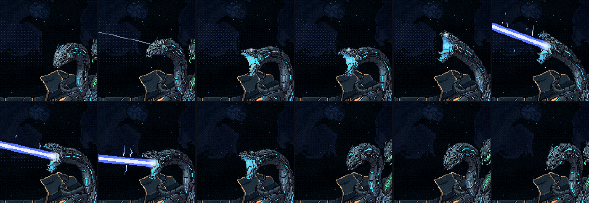

A Serpente: a cabeça do raio se mexe
01/11/2026 · rodada 11 das habilidades (o raio da azul) · nada foi commitado.
Da análise que você trouxe, você escolheu:
- A ameaça fica na cabeça. Ela segue a nave, solta um pulso pequeno no olho a cada leitura, e o olho trava antes do disparo. O caminho continua sutil, sem cone e sem interferência na tela.
- A preparação sai de dentro do aviso que já existia (1,6 s), então as folgas medidas não mudam.
- A recuperação é só respiro, de ~1,2 s sem raio, sem mudar o dano.
- A animação vem agora, antes dos efeitos. Esta rodada é a cabeça. Os efeitos novos do raio vêm na próxima.
A maquete
Cada raio grande, dentro do mesmo 1,6 s de aviso:
- Lê (0,35 s): de boca fechada, a cabeça segue a nave, com um pulso pequeno saindo do olho a cada leitura.
- Ensaia (0,45 s): o foco sai reto do olho e corre o caminho uma vez, com a cabeça acompanhando. No fim, o olho trava: um clarão, depois um brilho firme.
- Prepara (0,8 s): a cabeça volta ao meio e recua, a boca abre e começa a carregar. Depois ela sobe (ou desce) até o começo do caminho.
- Dispara: a cabeça acompanha o raio pela varredura inteira.
- Se recupera (~1,2 s, sem raio): fecha a boca de uma vez, a cabeça é jogada para trás e o corpo balança. A verde chega a se inclinar.
Na salva, a boca fica aberta entre os tiros. Cada tiro tem seu pulso, sua passada do foco e sua trava.

Os gestos, do PixelLab


- Todos partem da arte aprovada e voltam a ela. As trocas de gesto acontecem sempre na pose do meio, que é igual nos dois lados, então não há salto. Medido: no máximo 4% do desenho muda de um quadro para o outro, e nenhum salto.
- O gerador não gira a cabeça para mirar: ele a sobe e desce, com a boca bem aberta (~100°). O raio sai reto do meio da goela, e todos os ângulos das fatias passam por entre as mandíbulas. Quem escolhe o quadro é a altura do raio na borda da tela: raio alto, cabeça erguida; raio baixo, cabeça baixa.
- A subida saía em 3 quadros (o gerador faz o movimento todo no começo do clipe), e a cabeça andaria aos saltos. Gerei quadros intermediários entre os vizinhos que tinham salto grande, com as duas pontas fixas: cada salto virou 3 passos.
- A boca aberta saiu verde-menta misturada no ciano, a cor da cabeça verde. Troquei esse verde pelo ciano das luzes da própria cabeça, só na área da cabeça azul. Nada mais foi mexido.
- O olho e a boca foram medidos quadro a quadro, então o foco sai do olho e o raio sai da boca em todos os quadros.
Medidas
| rodada 10 | agora | |
|---|---|---|
| folga do manequim na fatia de cima | 19,1 px | 20,4 px |
| na fatia de baixo | 13,9 px | 12,5 px |
| na salva (o tiro mais apertado) | 5,4 px | 6,7 px |
| pontos do raio fora do caminho desenhado | 0 | 0 |
Com a boca se movendo junto da cabeça, o caminho desenhado agora é a soma exata de todas as posições do raio. A regra da salva também foi recalculada com a boca se movendo, e o sorteio é o mesmo de antes. A nave parada continua sendo atingida.
Para você decidir
- Os gestos: a cabeça seguindo a nave, abrindo recuada, subindo ou descendo para mirar, e a recuperação. Estão certos?
- A subida antes da fatia de cima é rápida, ~0,35 s até o topo. Fica assim, como um bote, ou mais lenta? Mais lenta tira tempo da leitura.
- A cor da boca: o ciano das luzes dela no lugar do verde-menta. Fica?
- Próximo passo: os efeitos do raio que ficaram combinados (o brilho externo, a frente de energia saindo da boca, o impacto mais forte no casco, as descargas e o resíduo depois do disparo, a energia entrando na boca). Sigo para eles?